An appendix to the blog post.
The Twitter engineering blog post explaining the fallacy of trying to use two control buckets to limit false positives includes the following probability distribution tables of various statistical significance outcomes for an experiment containing three buckets, A1 (control), A2 (control), and B (treatment), where B is drawn from the same underlying distribution as both controls -- the null hypothesis is true.
In this appendix, we provide the analytical derivation of these probabilities.
Numbers in the purple table are derived using Proposition 2, which we prove below. Here, X, Y, and Z refer to our three buckets -- control A1, control A2, and treatment B.
Proposition 2 provides the asymptotic joint distribution of the three t statistics when
From there we numerically calculate the conditional distributions under the cases X=Y, X>Y and X<Y respectively (as is shown in the purple table). For other cases, the table can be derived using Proposition 1.
Lemma 1 : If Xn converges in distribution to a constant C, then Xn converges in probability to C.
Lemma 2 (Slutsky Theorem) : Let {Xn}, {Yn} be sequences of scalar/vector/matrix random variables.
If Xn converges in distribution to a random element X and Yn converges in probability to a nonzero constant C, then Xn/Yn converges in distribution to X/C.
Proposition 1: X,Y,Z are independent distributions sharing the same mean and they have standard deviations 0 <σ 1, σ2, σ3 < ∞. Draw n1, n2, n3 samples from each of them independently. Denote s1, s2, s3 to be the sample variance of X,Y,Zand X‾, Y‾, Z‾ to be the sample mean. If there exists n, R1, RM2 and R3 such that
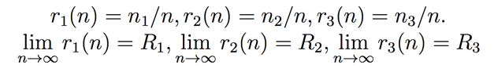we have the following weak convergence:
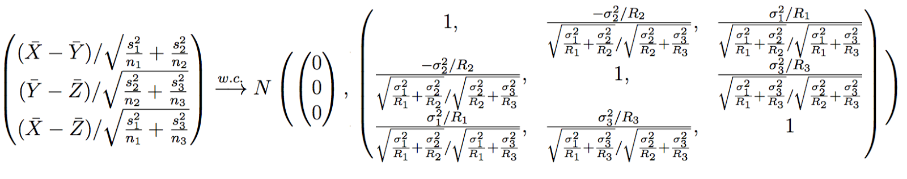Proof: For any -∞ < a,b,c <, using the independency between X‾, Y‾, Z‾ and central limit theorem,
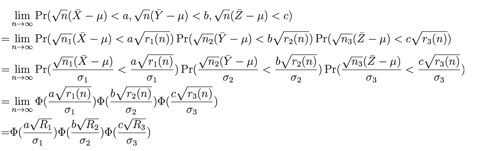,Therefore, by the definition of weak convergence (w.c.),
Function 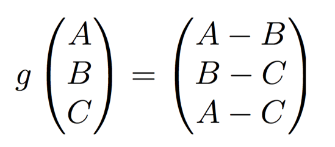 is not hard to see to be a continuous function. According to the property of weakly convergence,
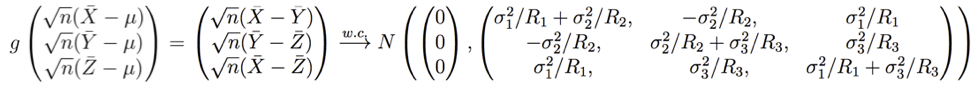,For i∈{1,2,3} , by central limit theorem, 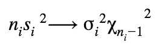 in distribution. The chi square distribution has mean ni-1 and variance 2ni-2. Hence, 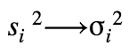 in distribution. From Lemma 1, si converges in probability to σi because mean converges to 1 and variance converges to 0. From that, we have 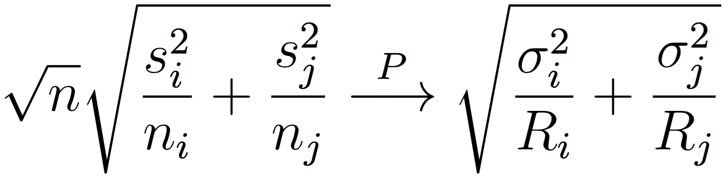
Apply Slutsky Theorem to the above two convergences,
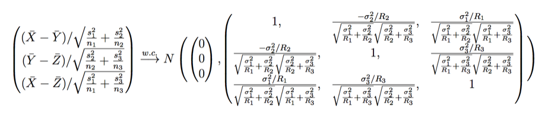QED.
Proposition 2: X,Y,Z are independent distributions sharing the same mean and they have standard deviations 0 <σ 1, σ2, σ3 < ∞. Draw n1, n2, n3 samples from each of them independently, let n=n1+n2+n3, if
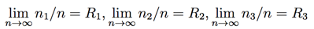,Denote s1, s2, s3 to be the sample variance of the samples and
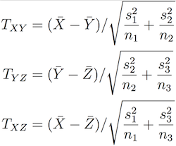,Then when σ1 = σ2 = σ3 and R1 = R2 = R3, then
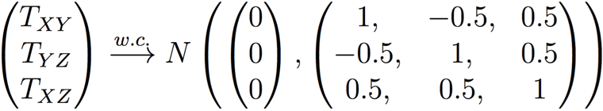and
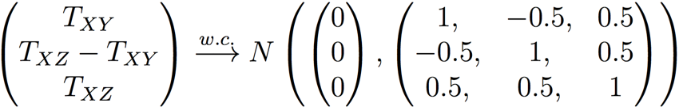Proof:
To prove the first convergence, simply cancel out the σ’s and R’s from the results of Proposition 1 given the assumption of Ri and σi.
The second convergence is trivial given the first convergence.
QED.
Now let’s calculate the top right cube of “Control=Control2” case. Other probabilities in the tables can be calculated in a similar way via Proposition 2:
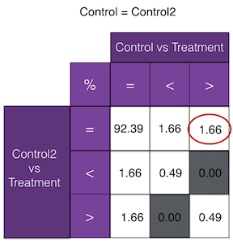Define
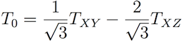
From Proposition 2
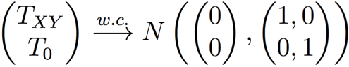Therefore
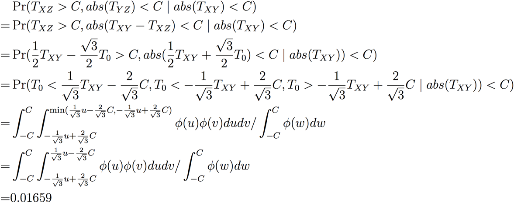,where φ is the density function of standard normal distribution
.